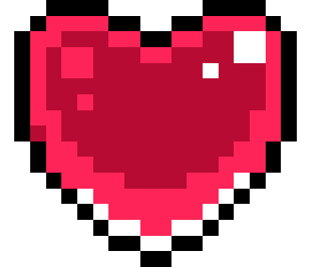
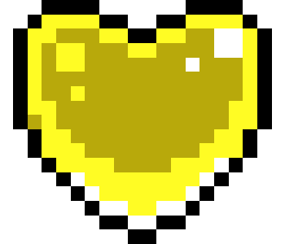
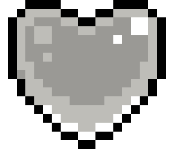

Coletáveis
Celeste apresenta um diversos coletáveis, que estão distribuídos entre as fases. Eles podem servir como um propósito para o jogador, além de proporcionar um desafio extra.
Para coletar um morango, o jogador precisa ficar em cima de uma plataforma estática (chão) por alguns frames.
Ao coletar um morango, um indicador visual aparecerá na tela mostrando que 1000 pontos foram ganhos, isso não possui nenhuma utilidade prática no jogo. Se vários morangos forem coletados em sequência, o indicador visual da pontuação aumentará em 1000 pontos até 5000. Quando a pontuação chegar onde deveria aparecer 6000, o indicador que aparecerá será "1UP".
O indicador visual ao coletar o Moon Berry é "WOW".
Morangos
Celeste possui um total de 202 morangos.
Morangos não são necessários para concluir ou progredir no jogo, servindo somente como desafio extra.
Dependendo da quantidade de morangos que o jogador possui, a torta do epílogo será diferente.
• Morango vermelho:
É o morango mais básico e encontrado em maior abundância no jogo. Aparecem em todos Lado A, com exceção do capítulo 6 e do capítulo 9.
• Semente de morango:
Pequeno coletável que aparece sempre em vários. As sementes são distribuídas em uma única sala. Ao coletar, o jogador deve pegar as sementes restantes sem tocar o chão, caso contrário, as sementes voltarão aos seus respectivos locais. Quando todas sementes forem coletadas, uma animação será iniciada mostrando o aparecimento de um morango vermelho.
• Morango com asas:
São morangos vermelhos especiais, que ao usar o dash na sala que está localizado, voará para o topo da tela até desaparecer. Para conseguir tentar coletá-lo de novo, basta sair e entrar da sala para recarregá-la.

• Morango dourado:
Conseguido após concluir a fase enquanto segura o morango dourado. Só pode ser coseguido após concluir o lado B do capítulo 8. Ele é coletado ao chegar no final de capítulo A, ou ao coletar o coração de cristal do capítulo B ou C. Ao morrer carregando o morango dourado, o jogador voltará para o começo do capítulo.
• Morango dourado com asas:
Morango exclusivo do capítulo 1 lado A . Conseguido após concluir o capítulo inteiro sem usar o dash. É localizado na última sala do capítulo. Antes de chegar na última sala, o morango só irá sumir caso o jogador passe por uma transição de tela após usar o dash. Sendo assim, caso o jogador acidentalmente use o dash, é necessário morrer antes de passar para outra sala.
• Moon Berry:
Morango exclusivo do capítulo 9. Para conseguir é necessário ter terminado o capítulo, então é preciso chegar novamente na sala final. Após desligar a energia da sala, o jogador precisará fazer o caminho inverso e seguir caminho até chegar no topo da sala. Após isso o jogador chegará em uma sala secreta onde terá que morrer nos cristais, fazendo-o aparecer no outro lado da sala. Então o jogador entrará em uma sala secreta final, que, perto do término, o Moon Berry estará localizado. Caso o jogador esteja com o morango dourado, morrer para os cristais não fará o jogador voltar para o início do capítulo.

Corações de cristal
Celeste possui um total de 24 corações de cristal, isso excluindo o coração de cristal falso encontrado no capítulo 9.
Os corações do lado A envolvem a conclusão de algum tipo de puzzle, enquanto no lado B e lado C é necessário completar a fase somente.
• Lado A: Coração azul:

• Lado B: Coração vermelho:
• Lado B: Coração amarelo:
• Capítulo 9: Coração cinza:
Fita cassete
As fitas cassete estão presente em em todos lado A, exceto pelo capítulo 9.
A fita cassete dos capítulos sempre estará presente em uma sala secreta com diversas plataformas de ritmo.
Ao coletar uma fita cassete, o jogador será levado para o começo da sala (exceto no capítulo 8, que o jogador será levado para o final) através de uma bolha.